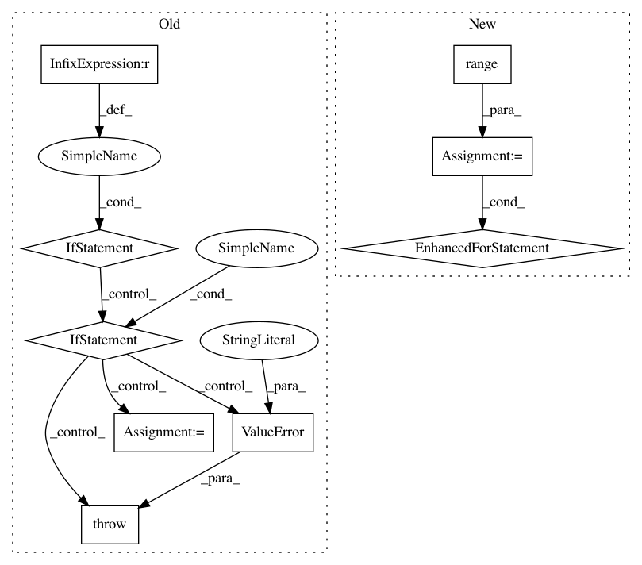

68c9bab4a5c6821c2a4395763c676ba796406c49,dask_ml/preprocessing/_encoders.py,OneHotEncoder,_fit,#OneHotEncoder#Any#Any#,157
Before Change
self.categories_.append(cats)
self.dtypes_.append(None)
else:
if not (X.dtypes == "category").all():
raise ValueError("All columns must be Categorical dtype.")
if self.categories == "auto":
for col in X.columns:
Xi = X[col]
cats = _encode(Xi, uniques=Xi.cat.categories)
self.categories_.append(cats)
self.dtypes_.append(Xi.dtype)
else:
raise ValueError(
"Cannot specify "categories" with DataFrame input. "
"Use a categorical dtype instead."
)
self.categories_ = dask.compute(self.categories_)[0]
def transform(
self, X: Union[ArrayLike, DataFrameType]
After Change
self.categories_.append(cats)
self.dtypes_.append(None)
else:
for i in range(len(X.columns)):
Xi = X.iloc[:, i]
if self.categories != "auto":
categories = self.categories[i]
Xi = Xi.astype(pd.CategoricalDtype(categories))
else:
if not pd.api.types.is_categorical_dtype(Xi.dtype):
raise ValueError(
"All columns must be Categorical dtype when "
""categories=\"auto\""."
)
cats = _encode(Xi, uniques=Xi.cat.categories)
self.categories_.append(cats)
self.dtypes_.append(Xi.dtype)
self.categories_ = dask.compute(self.categories_)[0]
def transform(
self, X: Union[ArrayLike, DataFrameType]
In pattern: SUPERPATTERN
Frequency: 3
Non-data size: 9
Instances
Project Name: dask/dask-ml
Commit Name: 68c9bab4a5c6821c2a4395763c676ba796406c49
Time: 2020-08-17
Author: TomAugspurger@users.noreply.github.com
File Name: dask_ml/preprocessing/_encoders.py
Class Name: OneHotEncoder
Method Name: _fit
Project Name: interactiveaudiolab/nussl
Commit Name: b82419f321b3b52841065e00d1f50945d7e8a2ee
Time: 2020-03-16
Author: prem@u.northwestern.edu
File Name: nussl/separation/primitive/hpss.py
Class Name: HPSS
Method Name: run
Project Name: scikit-image/scikit-image
Commit Name: 436a5025d82c5684359c1637f6ba69efc01ea65c
Time: 2017-01-01
Author: juan.n@unimelb.edu.au
File Name: skimage/morphology/_skeletonize.py
Class Name:
Method Name: thin